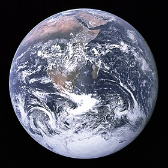

Algunos Detalles Sobre el planeta en el que vivimos

El planeta Tierra es el tercer planeta desde el Sol y es el más grande de los planetas terrestres. A diferencia de los otros planetas en el sistema solar que llevan el nombre de las deidades, la Tierra tiene un nombre en inglés y germánico que significa "suelo". Se formó hace aproximadamente 4,54 billones de años y es el único planeta conocido para sustentar la vida.